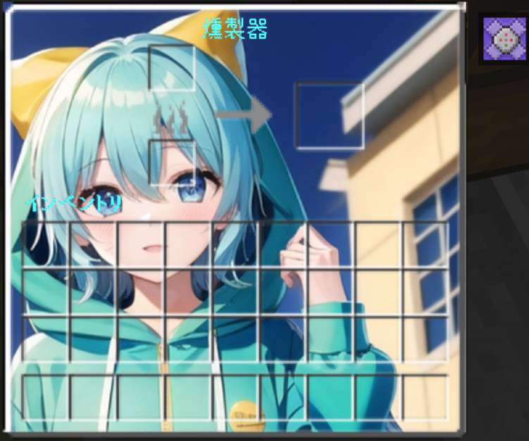

GUI
- 

バツボタンは閉じるボタンと書いてるところにあります。これはanimationなので、他のGUIとの相性が悪いです。
The cross button is located where it says close button. Since this is an animation, it is not compatible with other GUIs.
カスタマイズしたい場合は私のGUIを使用したことを記載してください。決して自作発言や記載を無視するなどの行為が報告または見かけた場合GUI自体を消去無視した人への対処は追放やコメントにての報告そしてdiscordにいた場合はBANとなります。
If you want to customize it, please mention that you used my GUI. If you report or see behavior such as ignoring self-made comments or descriptions, the GUI itself will be deleted, and those who ignore it will be banned, reported in the comments, and if they are on discord, banned.
旧取引画面のGUIの大きさが違った問題を解決した。
Solved the issue where the GUI size of the old trading screen was different.